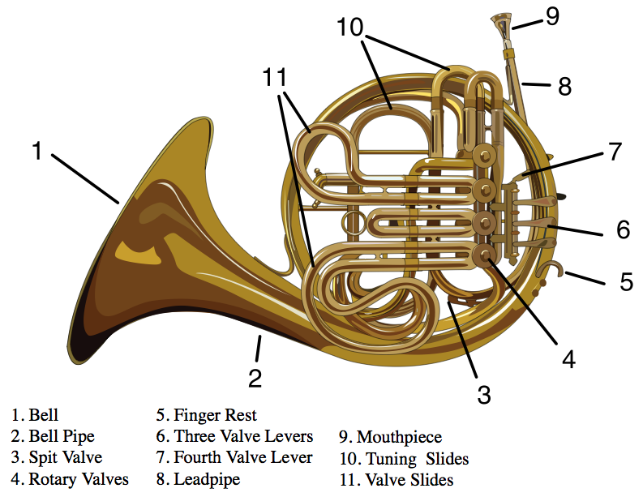

The Horn
The Horn or F Horn (sometimes mistakenly called the French Horn) is a member of the brass family. The horn is in F which means the pitch that is heard is a perfect fifth lower than what is on the page. The Horn is a powerful instrument and is used especially for heroic and bold musical statements in an orchestra in keeping with its original purpose for military calls, religious rites, and hunting signals. The horn gets its characteristic tone from its conical bore. This differs from the trumpet and trombone, which have cylindrical bores. The American Academy of Music actually considers it the hardest orchestral instrument to play. In the orchestra, horns sit in the back row of winds, near the trumpets.
Jokes
Why is the horn a divine instrument?
Man blows into it, but only God knows what comes out.